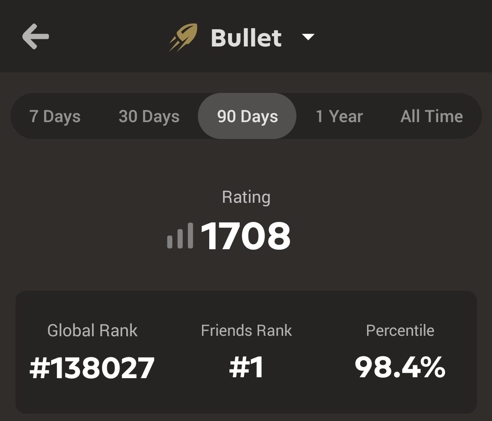
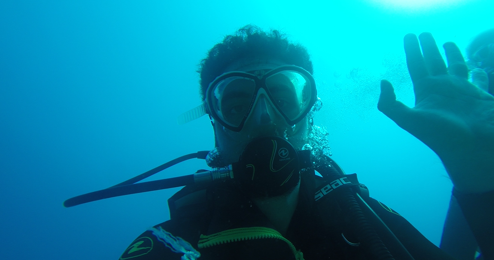
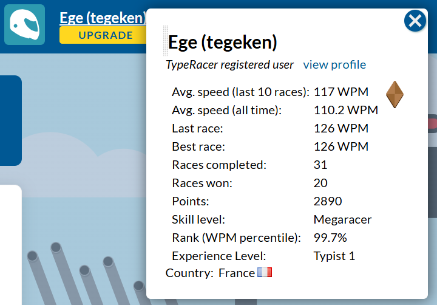
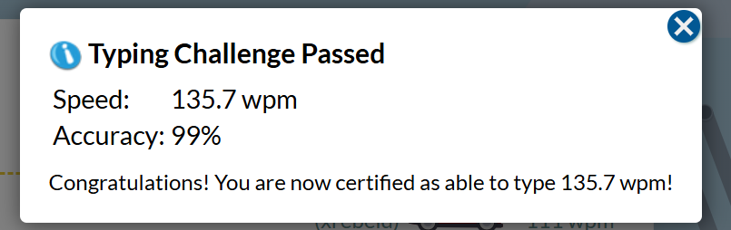
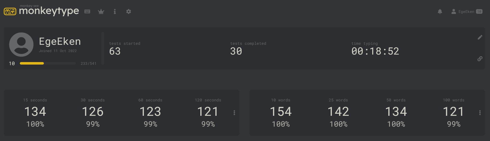
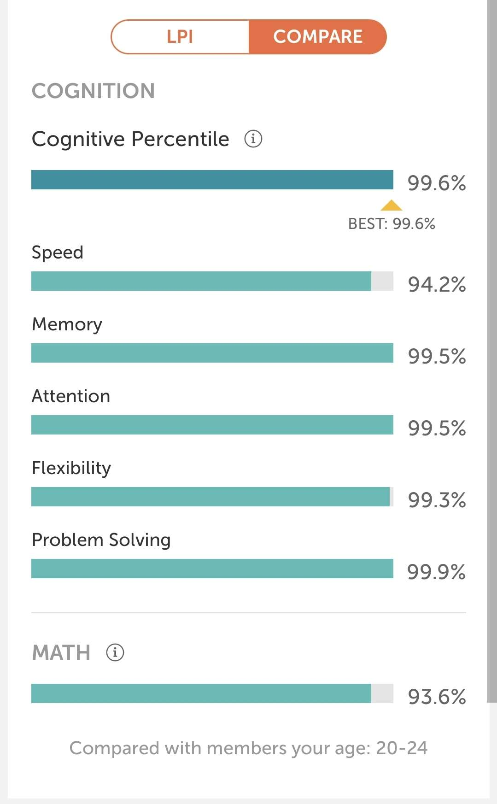
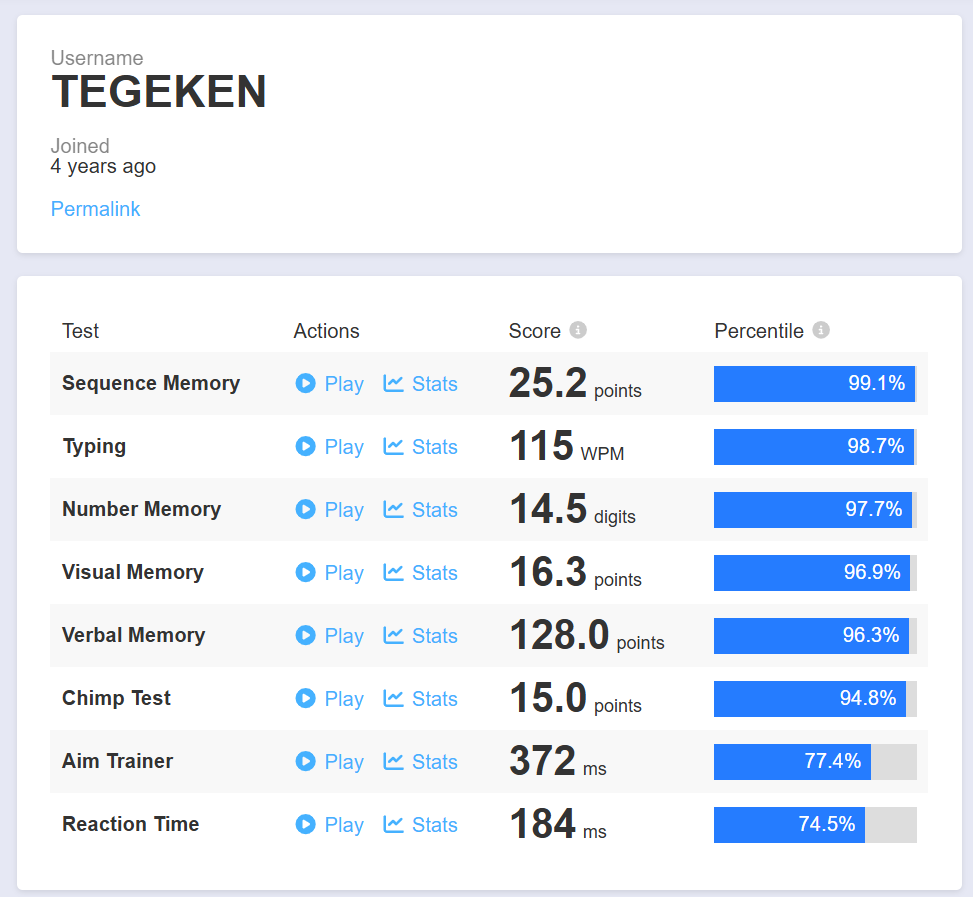
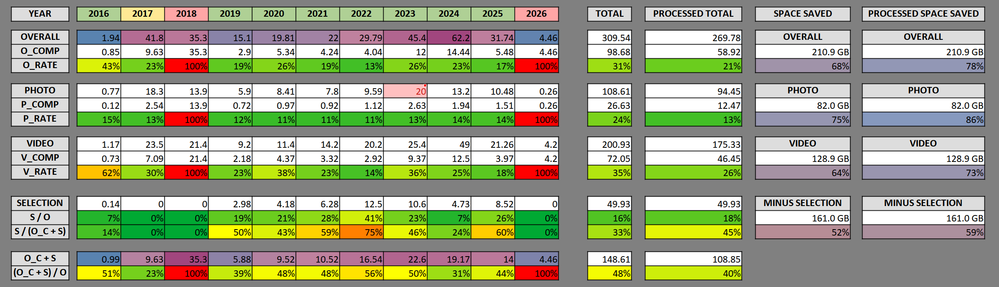

I like playing chess, when playing online I prefer faster time controls, but over the board I prefer longer, more thought out games.

I like scuba diving, I'm certified as an Advanced Open Water Diver, meaning I can dive up to 30 meters deep.
I have done professional video editing for a few years, as well as creating content on youtube and instagram for fun.



I like practicing fast typing on websites like typeracer and monkeytype, I can type consistently above 110 WPM with an accuracy of 98% or higher.
I like playing video games, some of my favorite games of all time are Minecraft, Hollow Knight (both of them), and Undertale. I used to play Minecraft very actively back in highschool, and I met many friends from all over the world thanks to it, some of which I've managed to meet in person.
I like speedrunning some games, the games I did speedruns for include Super Mario 64 (16 Star Category), Getting Over It, Clustertruck, Fancy Pants Adventures, and Only One


I like playing cognitive games like lumosity and the human benchmark.

I like making spreadsheets to keep track of random bits of personal data, i realise that sounds very lame but i find it very satisfying to organize information in a neat way. The image above was my compression spreadsheet where I tracked the file sizes of my phone camera roll archives after using the compression algorithms JpegXL and AV1
I like watching movies and TV shows, some of my favorite movies are Whiplash, Grand Budapest Hotel and Everything Everywhere All At Once, and for TV shows Breaking Bad, Better Call Saul, Community and Fargo.
I like reading political and economic theory, and engaging in discussions about them